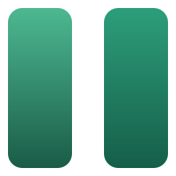

دیزاین سیستم مشترک پلاگینهای راهکار — نسخهٔ 0.1.0
پالت عمداً محدود است: یک برند، یک خنثی، چهار وضعیت. رنگ برند فعلاً جایگذار است.
وزیرمتن با سه وزن؛ مقیاس فاصله بر پایهٔ ۸ پیکسل با دو نیمپله.
سه حالت: اصلی، ثانویه، مخرب — در سه اندازه.
مستطیلی و نیمهتیز، نه کپسولی. اینجا مارکآپ ساده است؛ در ریاکت همین استایل روی FormToggle مینشیند.
در پیامکها و فاکتور نمایش داده میشود.
از پنل درگاه پرداخت کپی کنید.
کد پستی باید ۱۰ رقم باشد.
سوییچها زندهاند — بزنید تا حالت روشن/خاموش را ببینید. کارت چهارم حالت سوم است: «قابل روشنکردن نیست».
محاسبهٔ خودکار هزینهٔ ارسال بر اساس وزن و استان مقصد.
صدور فاکتور رسمی با شمارهٔ اقتصادی برای سفارشهای شرکتی.
بررسی سفارشهای مشکوک پیش از تأیید پرداخت.
در ۳۰ روز گذشته ۴ سفارش مشکوک علامتگذاری شده است.
ورود و ثبتنام مشتری با کد یکبارمصرف پیامکی.
همان نوعهایی که FieldRenderer تولید میکند: متن، عدد، چندخطی، کشویی، چکباکس — همه داخل FormRow بهجای جدول form-table.
مبنای محاسبهٔ هزینهٔ ارسال.
سفارش پرداختنشده پس از این مدت لغو میشود. 1-30
متغیرهای مجاز در راهنمای ماژول آمده است.
کد پستی باید ۱۰ رقم باشد.
جایگزین notice notice-success وردپرس.
وضعیت ماژول، سطح گزارش، و نتیجهٔ بررسی سلامت — هر سه همیناند.
کاشی «خوب» عمداً خنثی میماند تا قرمزها در نگاه اول به چشم بیایند.
همان چیدمان صفحهٔ گزارشها. تبها لینکیاند چون هرکدام یک زیرصفحهٔ جدا در پیشخوان است.
| زمان | سطح | بخش | پیام |
|---|---|---|---|
| 14:02:11 | خطا | پیامک |
ارسال به ۰۹۱۲۳۴۵۶۷۸۹ ناموفق بود.
{"code":402,"message":"insufficient credit"}
|
| 13:47:03 | هشدار | صف | تلاش دوم برای ارسال ایمیل سفارش ۱۰۲۴. |
| 13:12:55 | اطلاع | ماژول | ماژول «تقویم شمسی» روشن شد. |
پنل با کارت ماژول فرق دارد: سوییچ و نوار وضعیت ندارد و فقط تنظیمات مرتبط را گروه میکند.
نتیجهٔ آخرین بررسی پیشنیازهای افزونه.
/wp-content/uploads/rahkar-wp/queue [writable]
ماژول خاموش هیچ کدی روی سایت اجرا نمیکند. برای شروع یکی را روشن کنید.
برای صفحهٔ تنظیماتی که قرار است بزرگ شود. روی آیتمها کلیک کنید؛ گروهها باز و بسته میشوند و جستوجو کار میکند.
جایگزین confirm() مرورگر. متنها واقعیاند — از صفحهٔ گزارشهای پلاگین راهکار.
شبکهٔ ۲۴، ضخامت ۱٫۷۵، سرِ خط مربعی — عمداً نازک و گرد نیست.